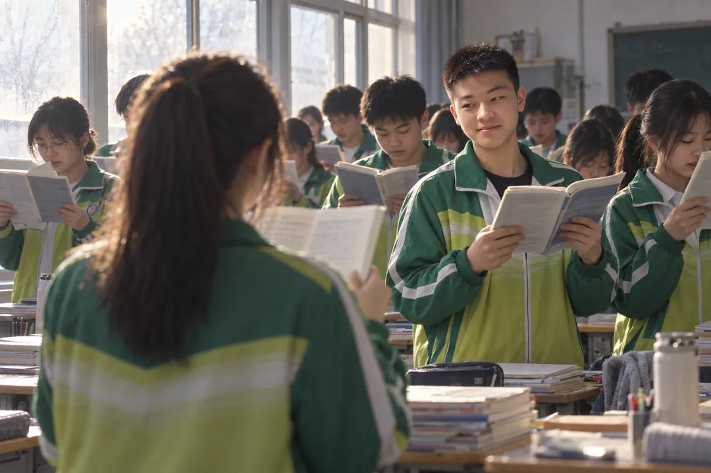
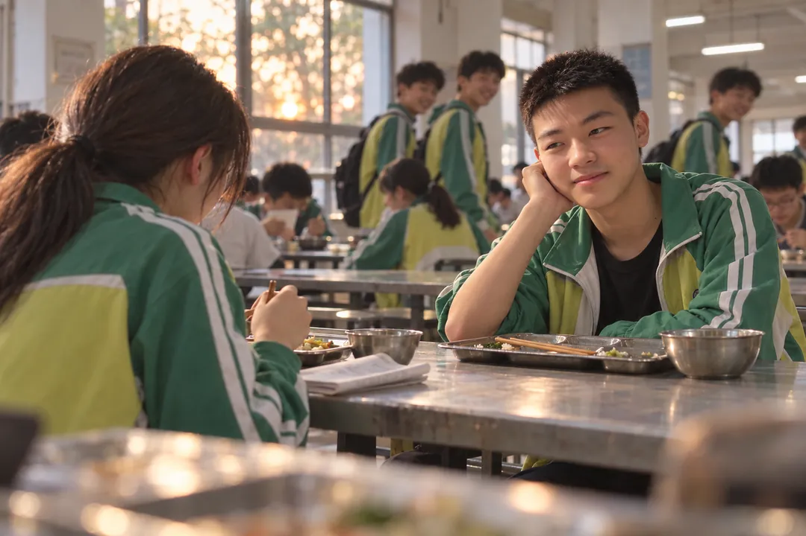
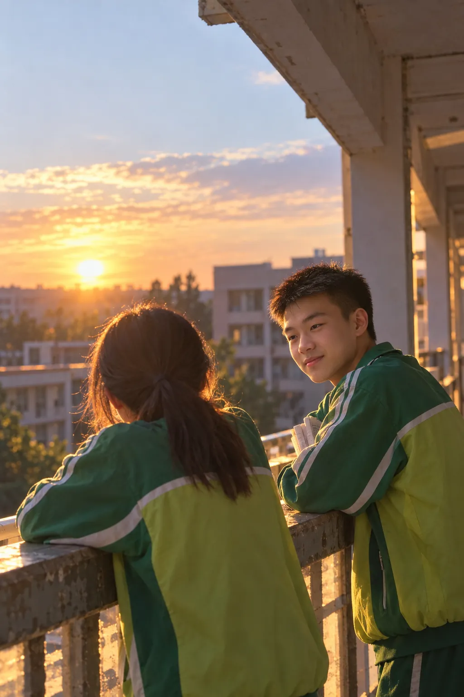
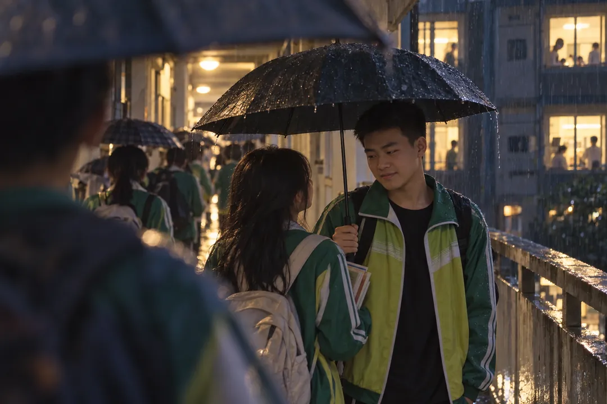

杨传瑞，有几顿晚饭，我是故意吃不完的。
餐盘里剩下一点米饭，两片已经凉了的菜。我用筷子拨一拨，又拨一拨，像它们忽然变得难以对付。你坐在对面，已经吃完了，把筷子横着放好，却没有马上走。
“还没吃饱？”
“嗯。”
其实早就饱了。
献县一中的饭菜，你知道的。我从前嫌它们难吃，后来却希望自己吃得再慢一点。
这些事，当时都没告诉你。
高一的时候，五点半的铃声总能把梦拦腰截断。到了五点四十，宿舍里还散着没穿好的鞋、翻乱的衣服，以及一句接一句的“快点，来不及了”。
冬天跑完早操，手冻得发僵，还要站着背英语。课本举久了，胳膊发酸，我就把它稍微放低一点，再低一点，最后偷偷搁在桌沿上。

第一次认真看你，就是在那样一个早晨。
我卡在一个单词上，身后有人轻轻念了个开头。我跟着念下去，念到一半，你又说：
“好像不对。”
我回头看你。
“你到底会不会？”
你低头翻书，翻了两页，才抬起脸。头发剪得很短，眼睛里还带着一点没藏好的笑意。
“我也不会。”
我忍不住笑了。早读声那么大，我们两个的笑被藏在里面，谁也没听见。
后来你叫了一声：
“虫虫，第三行。”
我顺着你指的地方找，终于找到了那个单词。再抬头时，你还没收回目光。
我赶紧转了回去。
那个早晨，教室里的玻璃蒙着一层白雾。我站了很久，手还是凉的，耳朵却慢慢热起来。
那时我只觉得奇怪。
那么冷的天。

高二，我们开始常常在食堂坐到一起。
没有约过。谁先到，谁就坐下。另一人端着餐盘走过来，停一下，坐到对面，连“这里有人吗”都渐渐不用问了。
有时你把卷子放在那个空位上，我一来，你就拿开。
有时我先到，低着头吃饭，余光却一直往过道上跑。看见你的校服衣角，才赶紧夹起一口菜，假装自己从来没抬过头。
你在对面坐下来。
“今天又是这个啊。”
“嗯。”
我们各自尝一口，再抬头看对方。不用说话，就知道今天食堂又让人失望了。
一起吐槽化学老师，也是从这些饭里开始的。
我问你：“今天那道化学题，你听懂了吗？”
你点头。
“会做吗？”
你夹菜的动作停了一下。
“不会。”
我一下笑出来，你也笑，笑到一半还回头看看，像怕化学老师正好端着餐盘站在身后。
“我觉得老师对我有个误会。”我压低声音说。
“什么误会？”
“以为我点头，就是听懂了。”
你低着头，肩膀轻轻抖了两下。
“那我今天也让老师误会了好几次。”
我们把卷子摊在餐盘旁边，小声抱怨那些听课时明明会、落笔时又不会的题。说着说着，你还会坐直一点，学我上课的样子，认真地点一下头，再点一下。
我拿筷子敲你的餐盘。
“我哪有这样。”
你不说话，又点了一下头。
旁边几个男生就是这时候看过来的。
“杨传瑞，你跟我们吃饭怎么没这么多话？”
其中一个用胳膊碰了碰你，另一个往我这边瞧，笑着拖长了声音：
“哦——”
我的脸一下热了。
那种热来得很快，从耳根漫上去，藏进头发里也没有用。我低头看餐盘，连筷子都不知道该夹哪一处。
他们还在笑。
我脱口而出：
“你们别乱说，我们就是同学。”
说得太快，也太响。旁边的人还没反应过来，我自己已经听见了。
你嘴角的笑停了一下。
随后点点头。
“嗯，同学。”
你说得比我轻。
那天之后，我们有一阵子没有坐在一起。
也许只是我到得晚，也许只是你跟别人碰巧坐下了。我没有问。端着餐盘经过你身边时，明明想停，脚却一直往前走。
有时在教室，我感觉你看过来，立刻低头翻书。等我再抬起眼睛，你已经转回去了。
我们像两个人隔着一扇玻璃，谁都看得见谁，却都以为，对方已经关上了门。
高三来了，连这点别扭也没有地方安放。
黑板旁的倒计时一天一天变短。班主任在门口提醒我们抓紧，桌上的卷子越摞越高。我有时看着那个数字，会忽然心慌：怎么昨天还那么多，今天就少了。
也是那一年，我们遇见了李老师。
英语课一开始，李老师就向全班提问。昨天卷子上整理出来的单词、圈起来的词组，今天还会再问；课讲到一半，也随时可能叫到谁的名字。
阅读理解的A、B、C、D四篇，七选五、完形填空、语法填空，一张卷子讲下来，能积累的词和表达都被拎出来，挤满了纸边。
李老师的英语说得快，讲得也好。我们一边听，一边赶紧记，常常上一行还没写完，下一处已经讲到了。
那些单词被问了一遍又一遍。李老师总提醒我们，背过了，知道意思，做题的时候才能认出来。
我们对李老师又爱又恨。上课怕被叫到，背的时候嫌多，等到考试，真在文章里认出一个熟悉的词，又忍不住高兴。我们班英语总能拿到很高的分数，下一节课开始前，却还是一片翻卷子的声音。
有一次，你被叫起来，卡在一个词组的意思上。
我找到那一行，用笔尖轻轻点着，把卷子往外挪了一点。
你看见了，终于答出来。
坐下时，你回头看我。
我本来想装作没有留意，偏偏抬眼太早，跟你的目光碰了个正着。你嘴角弯了一下，我立刻把卷子拉回来，低头盯住那个词组。
下课后，你走到我桌边。
“刚才谢谢了。”
我说：“比你高一那次提示得准吧？”
你愣了一下，笑了。
“你还记着呢。”
我把笔帽盖上，又拔下来。
“记性好。”
你没有拆穿我。
后来，我们又慢慢坐回了食堂里那两个位置。
再后来，晚饭后没说完的话，就被带到长廊上去。

从教学楼出来，往男生宿舍走，要先经过女生宿舍，再穿过两座宿舍之间的长廊。
你总要经过那里。
我本来不用。
可走到女生宿舍门口，我常常又找出一点没说完的事。一道题，一个单词，今天化学课上我们又没弄懂的地方。
“等一下，刚才那个……”
你就停住。
有时你会往女生宿舍的门口看一眼，再看我。我装作没有发现，低头从书里找卷子。
我们沿着长廊走，走到栏杆边，就不走了。
夕阳从栏杆的空隙里漏过来，落在鞋尖上。白天总觉得吵的学校，在那几分钟里会安静一点。远处还有脚步声，还有人喊同学的名字，可听起来，都隔着一层薄薄的光。
我趴在栏杆上，你站在旁边，手肘离我的很近。
有时候讲题，有时候抱怨今天太困，更多的时候，其实没有多少话可说。
你看着天，我看着你拿卷子的手。
纸角被风吹起来，你按住。过一会儿又翘起来，你就把整张卷子折了折，收进书里。
我总希望你别收得那么快。
卷子一收，就像该回去了。
那些男生也常常经过。
人还在长廊外面，你的名字就先到了。
“杨——传——瑞！”
一个跑过来搭你的肩膀，另一个笑着往你手里看。
“又讲题啊？”
“讲完没有，回宿舍了。”
你把肩上的手拨开。
“你们先走。”
他们互相看一眼，故意重复：
“行，我们先走。”
那个“先”字，被说得格外长。
我立刻直起身，把原本搁在栏杆上的手收回来，捏住袖口。脸慢慢发烫，眼睛只能盯着栏杆上一块掉漆的地方。
我怕你也跟着他们笑。
更怕你笑完，会说一句，别瞎闹，我们就是同学。
可你只是推了推其中一个人的肩膀。
“差不多得了，快走。”
几个人打打闹闹地往男生宿舍去，走远了还回头看。等脚步声散了，你重新站到我旁边，比刚才隔开了一点。
“他们就那样。”你说。
我点头。
风把袖口吹得贴在手背上，我慢慢松开攥着的手指。
你问：“刚才说到哪儿了？”
“忘了。”
这回是真的忘了。
我过了好一会儿才敢看你，却发现你也正在看我。
谁都没有立刻躲开。
你眼里还留着天边的一点亮色。我看得太久，心里先慌起来，只好低头去理根本没有乱的衣袖。
你转向夕阳，抬手摸了摸后颈。
耳朵是红的。
我想问，又怕问完，你也反过来问我。
于是我们谁都不说话，站在那里，等脸上的热一点一点被风吹散。
杨传瑞，那时候我连看你，都要分好几次。
先看你旁边的栏杆，再看你手里的书，最后才敢往上挪一点。你一转头，我就立刻望向别处，好像远处真的有什么特别值得看的东西。
有一次，你问：
“虫虫，你到底在看什么？”
“天啊。”
你抬头看了看。
“哦。”
随后我们又安静了一会儿。
那天的天其实已经快黑了。
后来，倒计时越来越短，我们去长廊的次数也少了。
有天你拿着一张模考卷子，折起来，又打开。平时能说很久的题，那天几句话就讲完了。
“你先回去吧。”你说，“别等我了，太耽误时间。”
我答应得很快。
“好。”
你抬头看我，像还想说什么。我已经把书抱起来了。
那晚，我走到女生宿舍门口就进去了。
没有再往前。
宿舍里有人背英语，有人洗衣服，有人趴在床边找掉下去的笔。我翻开卷子，把一道会做的题看了很久，也没有写下第一步。

高考前一天晚上，下雨了。
雨落得很急。长廊里挤着躲雨的人，外面伞挨着伞，鞋底踩过水洼，溅起一片细碎的响声。有人抱着书，有人喊同学过来，平常熟悉的路，被人和雨遮得断断续续。
我站在栏杆边。
三年里，我们总是被催着快一点。到了那一晚，我却希望雨不要那么快停。
你从长廊那头走过来，校服肩膀有一点湿，手里拿着伞。
“虫虫，怎么还没回去？”
“等雨小一点。”
你看了看外面，把伞撑开。
“走吧，我送你。”
女生宿舍不过几步路。
我们却走得很慢。
有人迎面过来，我往你这边让了一点，胳膊碰到你的衣袖。我刚想退开，脚边又有一片水，只好继续挨着你走。
你把伞往我头顶偏。
我看见你的另一边肩膀露在外面，就轻轻碰了碰伞柄。
“偏了。”
“没事。”
我又往你身边挪了一点。
伞终于正了。
那几步路里，你叫过一次我的名字。
“虫虫。”
“嗯？”
你低头看我，停了一会儿。
“明天加油。”
我本来已经抬起了脸，听见这句话，又慢慢低下去。
“你也是。”
雨敲着伞面。我们之间那点没说完的安静，被它敲得很响。
到了女生宿舍门口，我站上台阶，你还站在雨里。
“你怎么正好过来了？”我问。
“顺路。”
我点点头。
那时候，我已经很会点头了。听不懂的题可以问第二遍，不明白的话，却总装作明白。
高考结束后，后来回学校收书，我们又走到了长廊上。
教室里那些摞得很高的卷子，忽然都能装进箱子了。曾经挤在黑板旁边的日子，也已经数完。我站在栏杆边，找到那块熟悉的掉漆，伸手摸了一下。
你在旁边等着。
这一次，我没有找题。
“杨传瑞。”
“嗯？”
我望着你，练过很多遍的话，一下全忘了。最后只剩下一句，轻得差点没说出来。
“我喜欢你。”
你没有马上回答。
我盯着你校服上的一小处褶皱，想把后面的话补完整，又不知道先补哪一句。
“高二的时候，也喜欢。”我说，“那天他们起哄，我……”
你轻轻接了一句：
“你说我们就是同学。”
我点头，又赶紧摇头。
“我怕他们看出来。”
你抿着嘴笑了一下，笑意先落在眼睛里。手里的书被换到另一边，又换回来。
“我也怕。”你说。
我终于抬起眼睛。
这一次，你还在那里看我。
远处几个男生叫你回去，你往那边应了一声：
“你们先走。”
然后又转回来。
我忍不住笑了，你也笑。那些从前总让人难堪的起哄声，隔着长廊飘过来，竟然不再那么吓人。
过了一会儿，你忽然说：
“对了，高考前下雨那个晚上，我其实已经回过宿舍了。”
我手指停在栏杆上。
那场雨重新落下来。
伞挨着伞，人从眼前经过。我抱着书，站在长廊边，听见你叫，虫虫。
那些画面原来一直都在。
只是到了这时，我才看清你的来路——
杨传瑞，那天，你是从男生宿舍那边，向我走来的。